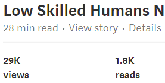

Articles/blogs written around 2015 that have gathered over 5000+ reads, discussing in detail the positive and negative impacts technology could pose in the near future to the economy and society.
@nath_leigh Nathan, you are truly brilliant. You understand the impacts of advancing technologies better than almost anyone--and write well
— Vivek Wadhwa (@wadhwa) July 25, 2015
fascinating article! Thanks for sharing.
— Fraser Nelson (@FraserNelson) October 22, 2016
Wow, tour de force review of the very latest developments in robotics with implications on employment by @nath_leigh https://t.co/PcxjzSsNyL
— Gerald Huff (@geraldhuff) August 15, 2015
Set of four long(each 10,000+ words) articles detailing the challenges that the most vulnerable in our society may face in a future job market due technological disruption, and discusses some solutions to prevent any unnecessary suffering. In this first article I discuss the new technologies which will disrupt many popular occupations, particularly low skilled, to better handle turn this coming disruption into a situation where we can all more equally enjoy the wealth the "machines" can bring us.
This is a 30 min read and contains 10,000 words, yet has been read by 1.7K people (as off 2017, according to medium stats)
Low Skilled Humans Need Not Apply: Exponential Job Disruption
This second article looks at the quality of new jobs, the erosion of the middle class leading to a polarisation of low skilled and high skilled jobs, the emerging models of employment, the rise of a globally educated workforce, the reduction in worker bargaining power and how technology will disrupt workers, particularly in low skilled jobs.
Low Skilled Humans Need Not Apply: The Growth, Quality And Polarization Of New Jobs
In this third article I discuss the labour market and education opportunities a child born in 2015 could have when they are 16–20, by looking at how technology will disrupt the majority of jobs young people commonly perform. I also show the unequal opportunity and discrimination a child of a certain race and/or gender currently faces. Finally I predict how a disenfranchised group of young men may develop as they are less likely to gain the skills vital to participate in the future global job market, and some of the issues this could cause on a local and global scale.
Low Skilled Humans Need Not Apply: The Employment Future For A Child Born Today
This last article looks at historic transitions and how we should learn from the mistakes of the past in dealing with disruption, I also explain the common misconceptions about the Luddites. I discuss policies and changes in culture which I believe will help us all more equally enjoy the abundance technology can bring. Last of all I highlight the main reason for my current optimism for the future and why I believe the policy solutions I discuss can be put in place soon, to better prepare us and to ease the continuous disruption as we transition into a digital age.
Articles/blogs written on Medium that have gathered over 5000+ reads, discussing in detail the positive and negative impacts technology could pose in the near future to the economy and society.
Robots are approaching a technological inflection point that will let them operate more reliably in dynamic, unscripted environments by taking on tasks that once relied on humans’ manual dexterity and good eyesight and cognitive thinking. Service robots are opening new contexts for productivity gains beyond what industrial robots have done. The capabilities of robots will increase and their price will drops over the next 20 years, resulting in disruption for many occupations.
Physical Work DisruptionWow, tour de force review of the very latest developments in robotics with implications on employment by @nath_leigh https://t.co/PcxjzSsNyL
— Gerald Huff (@geraldhuff) August 15, 2015
As much of the muscle work has been replaced by machines, the brain work is starting to face a similar fate by “intelligent” software bots. Cognitive computing like Deepmind's AlphaGo is giving computers the ability to “think”, which has the potential to disrupt a wide range of occupations. Computer power will become exponentially more powerful and AI algorithms being fed Big Data from the Internet of Things will evolve from Smart Assistants like Siri, into Smart Workers and Smart Bosses and even to Smart Teachers and Doctors within the next 20 years.
A brief look at some of the industries and occupations that Self Driving Cars will disrupt within the next 20 years.
Self Driving Cars may impact physical retail stores, especially if they are combined with other new advancing technology such as automated warehouses, drones and 3D printing. This will allow products to be delivered to wherever you want, whenever you want and much quicker and cheaper than currently possible, creating a new level of convenience that some brick and mortar stores may struggle to compete with.
How Self Driving Cars will disrupt Retail
This article looks at the current issues facing young people in housing, the job market, education and social mobility in the UK to predict what this may hold for people being born today as they enter into an increasingly disruptive future.
The Lost Generation That Hasn't Even Been Born
Get a STEM(Science, Technology, Engineering and Mathematics) degree is a common response to people when the topic of automation of jobs comes up or as a solution to increasing automation because more automation and robots means more jobs maintaining the robots and software. This article illustrates that this solution is not so simple and shows how even STEM jobs are not immune from disruption in the near future due to new technologies.
STEM Disruption